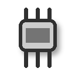

新分頁 ▾
我的最愛 ▾
輸入文字
複製
純文字貼上
複製全部
清除畫面
翻頁 ▾
視窗分割
遠端設定
設定
關於
▲
▲
▼
✕
更改名稱
記錄 log…
執行巨集…
PowerShell 開啟
沙盒模式
清除沙盒…
重新啟動
配色
▸
預設（設定顏色）
推播到 Telegram
AI聊天室設定…
開始討論／換主題…
插話…
結束討論
開啟討論紀錄資料夾
代理團隊設定…
投遞
▸
停止任務
開啟訊息資料夾
關閉
PowerShell
SSH…

連接埠…
自動偵測
代理團隊…
AI聊天室…
自訂連線設定…
加到我的最愛：目前分頁
設定…
上移
下移
改名
刪除
關閉
上一頁
下一頁
移到最上面
移到最下面
純文字貼上
複製且貼上
複製
複製全部
複製全部存至檔案
全選
搜尋
複製網址
用瀏覽器開啟
自訂連線
名稱
執行檔
瀏覽…
參數
圖示
關閉鍵
Ctrl+C
Ctrl+D
不送
次
啟動前選擇工作目錄
透過 PowerShell 執行（.cmd 需要）
隱藏（不列在「新分頁」下拉）
沙盒模式（建議開啟）
儲存
刪除
回到預設
自動偵測
新增
關閉
主機
演算法
SHA256
MD5
接受並儲存
只這次
取消
類型
SSH
Telnet
IP / 主機
Port
帳號
密碼
金鑰檔
瀏覽…
保持連線
連線
加到我的最愛
取消
送出
返回
確定
否
取消
Port
重新掃描
Baud rate
Data bits
Parity
Stop bits
Flow control
回到預設
開啟
加到我的最愛
取消
離開
取消
繼續連線
取消
瀏覽…
確定
取消
AwayTerminal